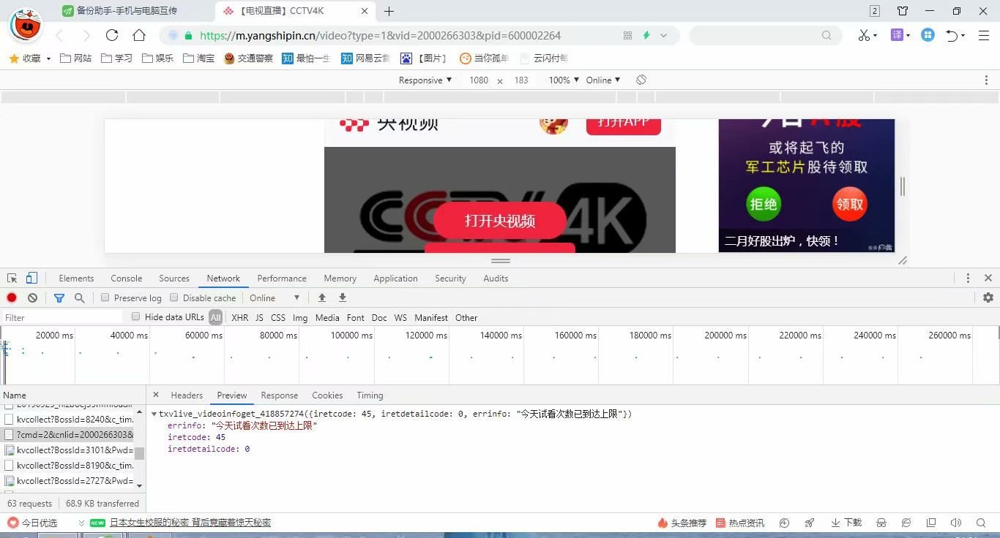
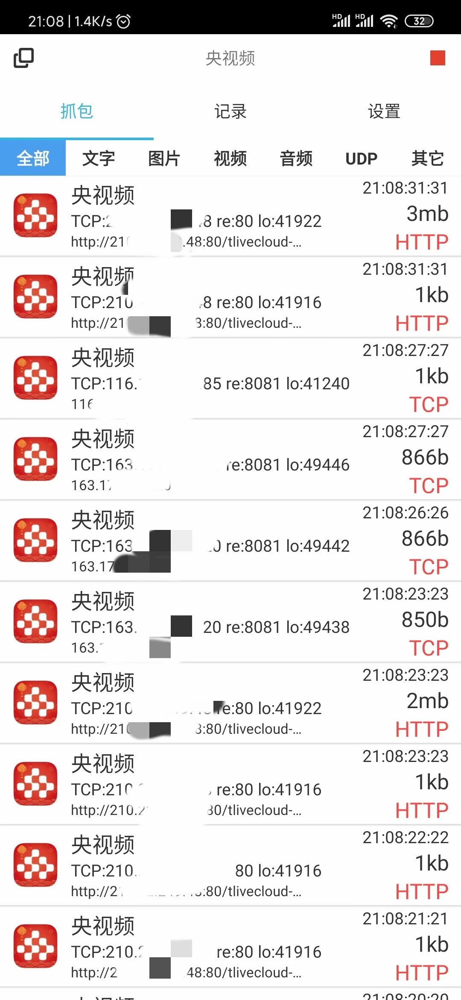
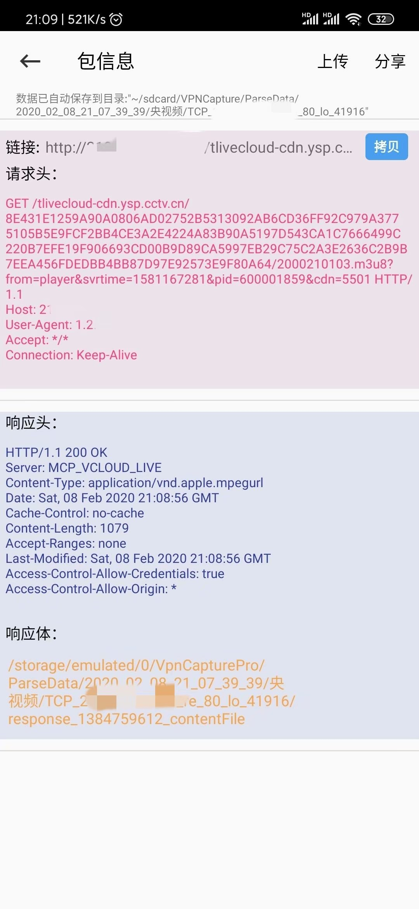
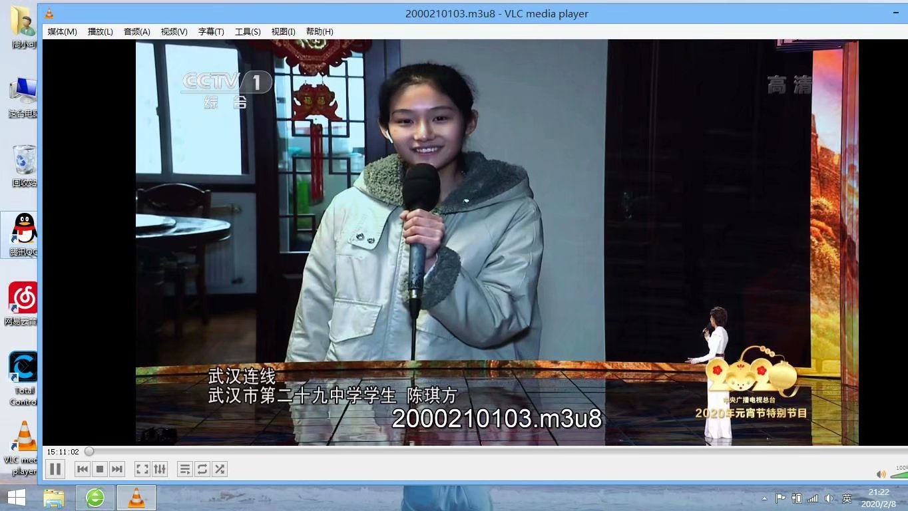

比较了各种电视台直播网站，发现最清晰的还是央视频APP上的，甚至比广电的有线电视还要清晰。但却只能在手机的小屏上观看实在是体会不到这种效果。尝试开始获取m3u8直播源
首先尝试直接在手机的web页面获取，发现已经被限制，无法观看
那就直接在APP进行抓包，使用抓包软件netkeeper，选择“央视频”，进行抓包可以很轻松的获取到m3u8直播源
 将直播源拷贝至VLC等播放器，即可播放
但发现一个问题，该直播源是每天会更新的，也就是说第二天需要重新抓包，准备进一步研究。